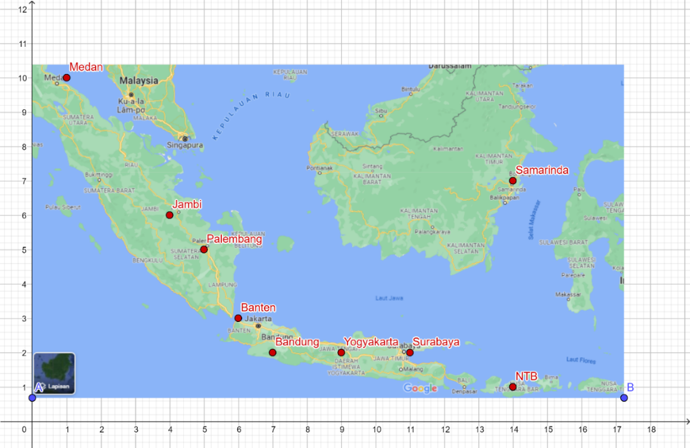
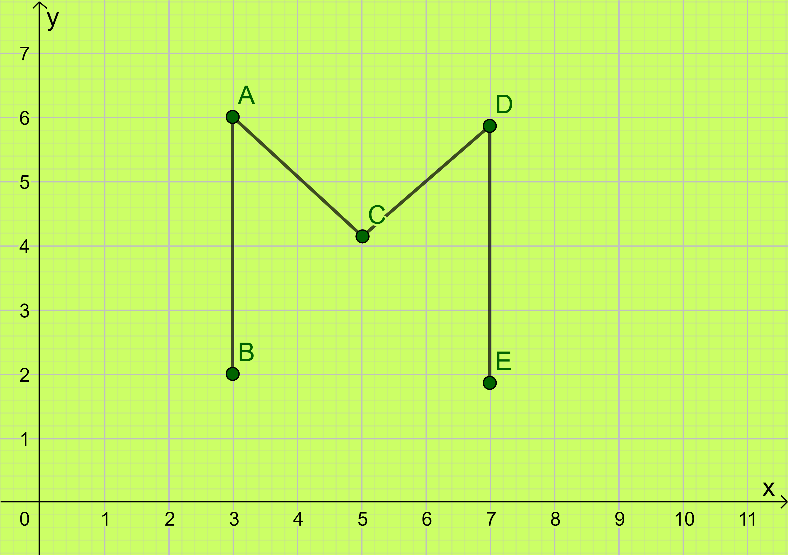
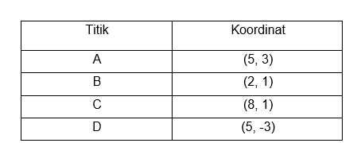

Evaluasi Letak tempat pada Denah
a. Bila ingin pergi ke toko buku melalui jalan .... dan ke arah ....
b. Alya ingin pergi ke pasar melalui jalan ... dan ke arah ...
c. Zila ingin pergi ke rumah sakit melalui jalan ... dan ke arah ....
2) Dalam satu baris terdapat 25 rumah. Rumah Pak Adam dan Pak Derry terpisah 5 rumah. Rumah Bu Ninis posisinya tiga rumah sebelum rumah Pak Derry. Rumah Pak Adam bernomor 11. Jika nomor rumah Pak Adam lebih besar daripada nomor rumah Pak Derry, berapa nomor rumah Pak Adam?
Evaluasi Koordinat Letak benda
1. Baju pada koordinat (2, 3).
2. Tas pada koordinat (3, 5).
3. Celana pada koordinat (1, 8).
4. Topi pada koordinat (6, 7).
5. Meja pada koordinat (7, 9).
6. Kursi pada koordinat (1, 4).
7. Rumah pada koordinat (8, 2).
8. Kipas pada koordinat (4, 6).
9. Pohon pada koordinat (1, 1).
10. Gelas pada koordinat (5, 8).
Evaluasi Koordinat Letak tempat

Perhatikan peta Provinsi yang ada di Indonesia, Isilah titik-titik yang menyatakan letak provinsi tersebut.
1. Medan (..., ...)
2. Jambi (..., ...)
3. Palembang (..., ...)
4. Banten (..., ...)
5. Bandung (..., ....)
6. Yogyakarta (..., ...)
7. Surabaya (..., ...)
8. Samarinda (..., ...)
9. NTB (..., ...)
Evaluasi Koordinat Kartesius
1. Lengkapilah berikut ini sesuai dengan koordinat Kartesius di buku latihanmu!

a. Koordinat A (-3, 5)
b. Koordinat B (..., 4)
c. Koordinat C (..., ...)
d. Koordinat D (..., ...)
e. Koordinat E (..., ...)
f. Koordinat F (..., ...)
2. Tulislah koordinat titik A, B, dan C !
3. Tentukanlah letak koordinat titik A(1, 2), B(4, 5), C(3, 2), dan D(5, 2) pada bidang koordinat kartesius.
Evaluasi Menggambar Bangun Datar melalui Titik Koordinat
1) Gambarlah pada bidang koordinat berikut ini dan garislah titik-titiknya menjadi sebuah bangun datar!
2) Gambarlah titik-titik E(–4, 2), G(3, 5), dan H(–4, 5). Tentukan koordinat titik F sehingga terbentuk bangun persegi panjang EFGH! 2) Gambarlah titik-titik E(–4, 2), G(3, 5), dan H(–4, 5). Tentukan koordinat titik F sehingga terbentuk bangun persegi panjang EFGH!
3) Pada jajar genjang ABCD diketahui A(-5,4), B(2,4), C(3,-3), dan D(-4,-3) dan pada koordinat Cartesius!
4) Ditentukan layang-layang KLMN, dengan KM sumbu simetri. Koordinat titik L(3, 2), M(6,-1), dan N(3,-7).
a. Gambarkan layang-layang KLMN pada koordinat Cartesius!
b. Tentukan koordinat titik K!